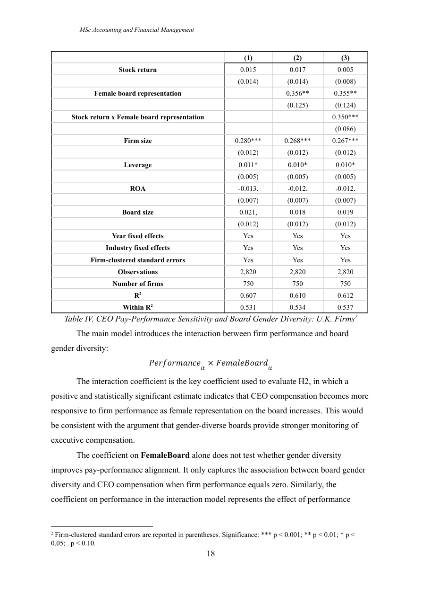

PROJECT 02
Business & Data Analysis in R
I used R to examine how board gender diversity relates to CEO pay–performance sensitivity in listed U.S. and U.K. firms.
Financial Data Analysis, Panel Data, Econometrics, Corporate Governance
R, WRDS data and panel regressions.
Board Gender Diversity and CEO Pay–Performance Sensitivity
R Programming | Financial Data Analysis | Panel Data | Econometrics | Corporate Governance | Business Research
MSc dissertation • Academic research • U.S. and U.K. listed firms • 2019–2024
Results are extracted from the completed dissertation. The original regressions have not been rerun for this portfolio. The findings describe conditional associations, not causal effects.
01The challenge
How closely does CEO pay track company performance—and does board gender diversity change that relationship?
My Warwick MSc dissertation examined U.S. and U.K. listed firms over 2019–2024. The question matters to boards, remuneration committees and investors assessing executive incentives and oversight.
Academic research using actual financial and governance data. Reported results are extracted from the completed dissertation; the original regressions have not been rerun for this portfolio.
02Approach
I combined compensation, financial, market-return and board-governance sources, checked identifiers and duplicates, constructed fiscal-year performance measures and retained complete cases for analysis.
The final sample comprises 9,781 U.S. firm-years across 1,854 firms and 2,820 U.K. firm-years across 750 firms: 12,601 observations and 2,604 firms in total.
The R workflow moves from source imports and matching to variable construction, country panels, interaction regressions and robustness checks. Original licensed firm-level datasets are not redistributed.
03Tools
R: tidyverse, dplyr, readr and lubridate for data preparation; fixest::feols for regression estimation.
The outcome is log total CEO compensation. Performance is fiscal-year stock return; board diversity is the proportion of female directors. Controls include log assets, leverage, ROA and board size.
Main models include year and two-digit SIC industry fixed effects, with standard errors clustered by firm. A pooled three-way interaction tests whether moderation differs between countries. Robustness tests use firm fixed effects, alternative U.K. pay, change in log pay and ROA.
04Analysis
The interaction tests whether the slope linking performance to log CEO pay changes with female board representation. It is distinct from a simple association between board diversity and pay levels.
Separate-country interaction estimates (clustered standard errors):
U.S.: 0.058 (0.209), not statistically significant.
U.K.: 0.350 (0.086), p < 0.001.
In the pooled model, U.K. moderation is 0.309 (0.083), p < 0.001. The U.S.–U.K. difference is −0.184 (0.224), p = 0.410. The combined U.S. moderation estimate is 0.125 (0.211), p = 0.554.
Source: dissertation Tables III–V, pp. 15, 18 and 20. These are reported estimates, not independently recalculated results.
05Key findings
H1 — Baseline pay–performance relationship: positive but not statistically significant in either country.
Read more
H2 — Board-diversity moderation: supported in the main U.K. specification; not statistically significant in the U.S. Non-significance does not establish the absence of an effect.
H3 — Country difference: not supported. A significant U.K. coefficient and an insignificant U.S. coefficient do not establish that the countries differ significantly.
Robustness is mixed: the U.K. interaction remains significant with firm fixed effects and alternative total direct pay, but not when using change in log pay or ROA. The findings describe conditional associations, not causal effects.
06Recommendations
Remuneration committees and investors should consider board composition alongside incentive design, performance horizons and monitoring arrangements. This research does not establish that changing board composition will cause stronger pay alignment.
Interpret cross-country comparisons cautiously: ExecuComp and BoardEx pay definitions differ, the code does not harmonise currencies, and stock returns reflect wider market conditions. Observational data leave omitted-variable and reverse-causality concerns unresolved.
Replication note: the change-in-log-pay code uses the previous observed firm record without explicitly requiring consecutive years. Its reported estimates are retained, with this qualification documented in the companion report.
07What I learned
I developed experience linking multiple financial sources, constructing panel variables in R and interpreting interaction models and robustness tests. The project reinforced the importance of checking identifiers, defining comparable measures and distinguishing statistical significance from practical and causal claims.
It also strengthened my ability to communicate a qualified conclusion to a non-technical audience. As disclosed in the dissertation, ChatGPT supported code troubleshooting and specification checks; I retained responsibility for methodological decisions, interpretation and the submitted work.
08Research source
Camila Harburger Devoto (2026), Board Gender Diversity and CEO Pay-Performance Sensitivity: Evidence from U.S. and U.K. Listed Firms 2019–2024. MSc Accounting and Financial Management, Warwick Business School. Tables I–V and Appendices A–D.
This page reports aggregate academic findings. Original WRDS datasets are not shared.
PROJECT EVIDENCE
Read the reported research results
Original regression-table excerpts and limitations from my dissertation. Student identifiers are removed. These are reported results; no regressions were rerun for this portfolio, and licensed data are not included.

